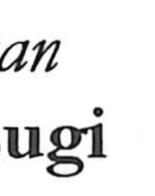

杉

Uncategorized
Kun: sugi | On: san
cedar ・ cryptomeria
Explanation
A phono-semantic character: the tree radical 木 supplies the meaning, while the phonetic element san (彡) gives the on reading. The phonetic base san is scarcely attested as an independent graph, and this tree name itself is rare in the oldest texts; yet it appears in later literature, as in Du Fu’s “Singing Thoughts on Ruins,” which speaks of cedars and pines at a mausoleum where storks nest—a scene that reflects how cedars commonly stood around tombs and monastic precincts.